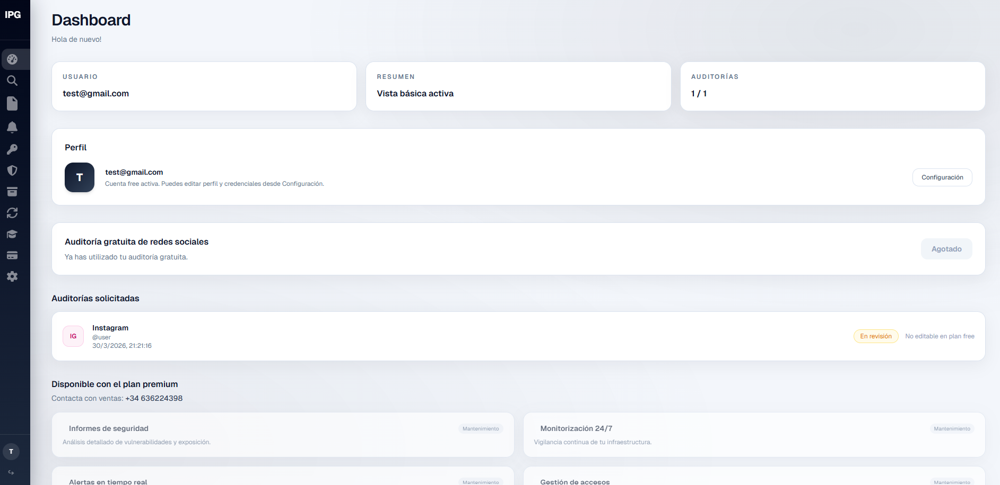
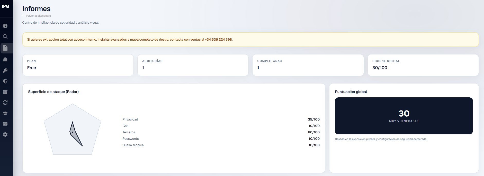
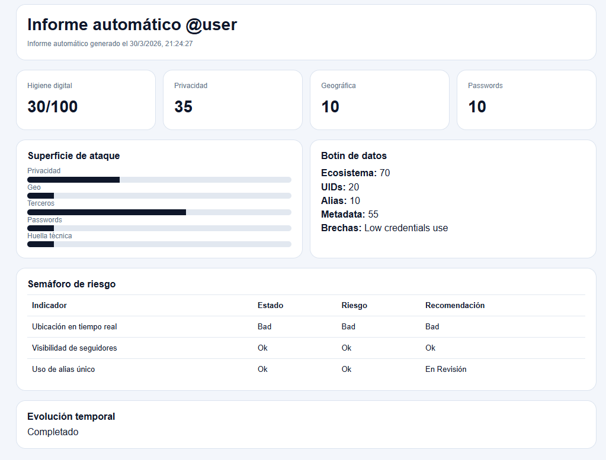

CaaS convierte la protección de redes sociales en algo visible y accionable. En un solo entorno puedes entender el estado general de tus cuentas, detectar qué necesita atención y seguir una operativa mucho más clara cuando gestionas riesgo, accesos o incidentes.

La app reúne en una sola vista el contexto de seguridad de las cuentas y activos que importan, para que no dependas de revisiones manuales, capturas sueltas o información repartida entre personas y herramientas.
Te ayuda a identificar riesgos activos, incidencias abiertas y puntos sensibles que conviene resolver antes, para que el equipo actúe con criterio y no solo con urgencia.
CaaS está pensada para personas, marcas y empresas que necesitan más control, mejor trazabilidad y una forma más profesional de prevenir, escalar y responder ante problemas en redes sociales.
Después del panel principal, CaaS genera un informe más detallado con la lectura de riesgo de la cuenta. La vista reúne puntuaciones, superficie de ataque, señales detectadas y una estructura clara para entender dónde está la exposición real.
Esto permite pasar de una visión general a un documento accionable, útil tanto para la persona que gestiona la cuenta como para equipos internos, responsables de marketing o perfiles de dirección que necesitan contexto sin entrar en complejidad técnica innecesaria.

El siguiente paso natural es la exportación del informe en PDF. Así la información deja de quedarse dentro de la app y se convierte en una pieza útil para compartir con clientes, partners, asesoría, equipos o responsables que necesitan ver el estado de riesgo de forma clara.
De esta forma, dashboard, informe y descarga trabajan juntos: primero entiendes la situación, después revisas el detalle y por último puedes documentarlo para seguimiento, auditoría o toma de decisiones.

Protegemos las redes sociales más importantes y más usadas a dia de hoy.
Un bloque pensado para ver rápido qué protege IPGuard Social y qué valor aporta en cada fase.
Analizamos quién tiene acceso a cada cuenta, qué usuarios siguen activos y qué permisos sobran o están mal gestionados.
Refuerzo de MFA, correos vinculados, recuperación, dispositivos confiables y medidas clave para reducir el riesgo real.
Revisión de activos, páginas, cuentas publicitarias, administradores, partners y estructura de permisos en Meta Business.
Copia organizada de publicaciones, copies, creatividades, métricas y referencias útiles para continuidad y recuperación.
Estructura de respaldo para que una caída de cuenta no signifique perder contexto, materiales ni capacidad de reactivar.
Seguimiento de cambios sospechosos, accesos críticos, actividad inusual y señales que conviene revisar antes de un incidente.
Identificación de cuentas falsas, clones de marca o perfiles fraudulentos que afecten reputación y confianza.
Revisión de vectores de engaño habituales en equipos, creadores y managers para reducir caídas por ingeniería social.
Actuación guiada ante hackeos, pérdida de acceso, cambios de correo, bloqueos o secuestro parcial de cuentas.
Apoyo en la recuperación de la cuenta original con orden, evidencias y pasos claros para maximizar opciones.
Procedimientos documentados para saber qué hacer antes, durante y después de un incidente sin improvisación.
Organización de accesos para empleados, agencias, freelances, managers y colaboradores externos.
Análisis de sesiones abiertas, dispositivos vinculados y puntos de acceso que conviene limpiar o revocar.
Revisión de apps conectadas, automatizaciones, herramientas externas y permisos de terceros con acceso a tus cuentas.
No tratamos todas las cuentas igual: priorizamos las que afectan más a campañas, ventas, clientes o reputación.
Revisiones recurrentes para detectar nuevas debilidades, accesos obsoletos o configuraciones que hayan cambiado con el tiempo.
Capacitación para equipos y perfiles con acceso a cuentas para reducir errores comunes y hábitos inseguros.
Recopilación organizada de pruebas y contexto técnico para facilitar escalados, reclamaciones y acciones posteriores.